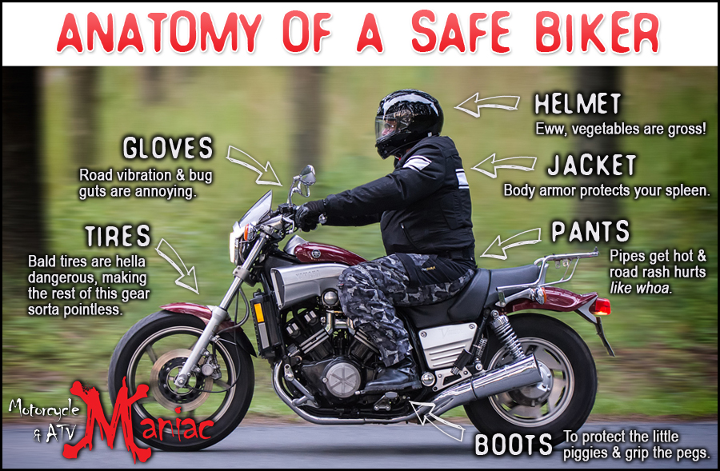

Wear a helmet, use protective gear, and follow traffic laws.
Motorcycle safety is crucial for riders of all experience levels, from beginners to seasoned motorcyclists. Wearing a DOT-approved helmet significantly reduces the risk of serious head injuries, while protective gear such as jackets, gloves, and boots provides essential protection in case of a fall. Practicing defensive riding, staying highly visible to other drivers, and strictly following traffic laws are key to minimizing risks on the road. Unlike cars, motorcycles lack an external protective frame, making awareness, caution, and preparedness even more critical. Ride responsibly, stay alert, and always make safety your top priority.
